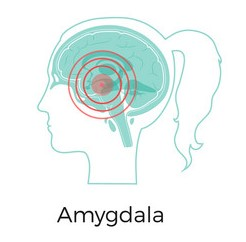
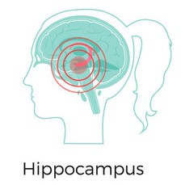
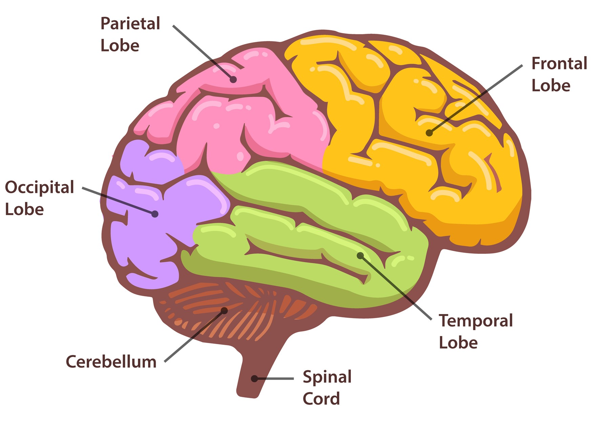
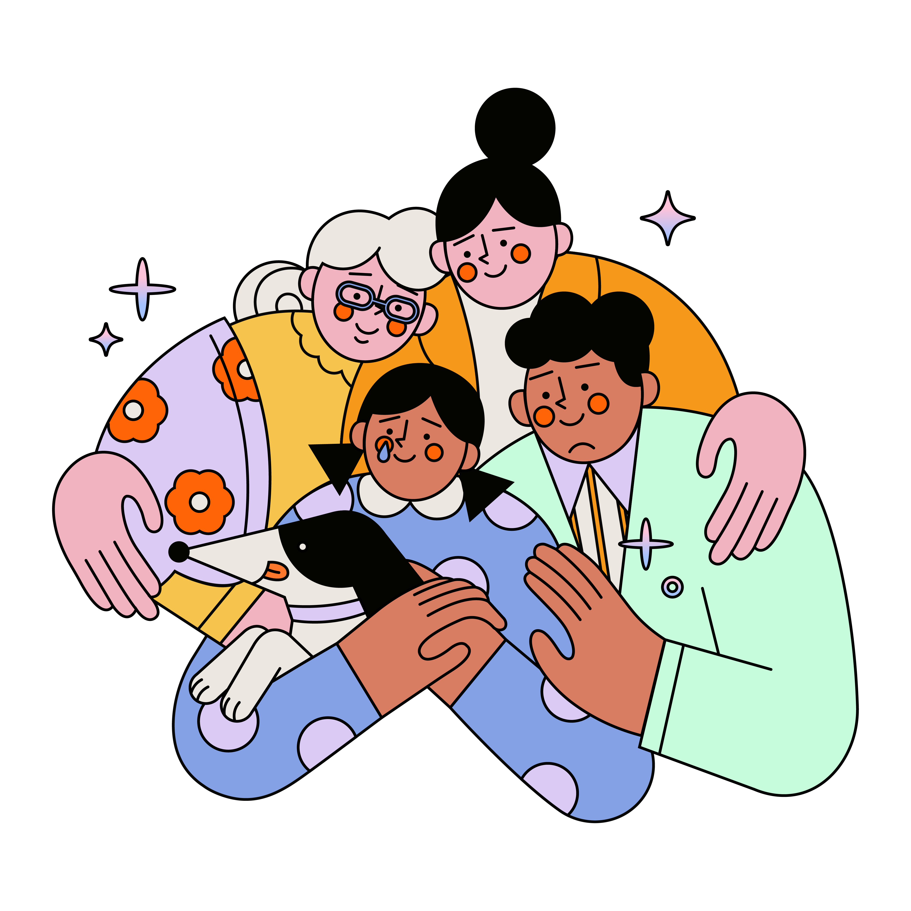

What is Mentall health ?
According to the World Health Organization, mental health is a state
of mental well-being that allows individuals to cope with life's challenges, realise their
strengths, study and work productively, and contribute to their community.
It is an essential component of health and well-being that underlies our individual and
collective abilities to make decisions, form connections, and influence the environment in
which we live.
Mental health is a fundamental human right.
And it's essential for personal, societal, and socio-economic growth.
Mental health exists on a complicated spectrum that varies from person to person, with
variable degrees of difficulty and discomfort and potentially very diverse social and
clinical results [1].
“The true definition of mental illness is when the majority of your time is spent
in the past or future, but rarely living in the realism of NOW.”
― Shannon L. Alder, n.d.
What is Mentall illness ?
According to the American Psychiatric association, mental illnesses are health conditions
characterised by changes in emotion, thinking, or behaviour (or a combination of these).
Distress and/or difficulties functioning in social, workplace, or family activities are
associated with mental illnesses [2].
It causes individual distress and makes it difficult for them to function.
Mental illnesses complicate mental health by influencing how a person feels, thinks,
behaves, and experiences the world. It can be caused by genetics, brain chemistry, or
trauma [3].
Mental illness does not discriminate; it may affect anybody, regardless of age, gender,
geographic location, income, social position, race/ethnicity, religion/spirituality, sexual
orientation, background, or other component of cultural identification. While mental illness
can
strike at any age, three-quarters of all cases begin before the age of 24 [3].
“A sick thought can devour the body's flesh more than fever or consumption.”
― Maupassant.
How mental illness affect our daily life?
A mental illness can make you unhappy and lead to complications in your everyday life, such as in;
Poor mental health frequently leads to issues such as social isolation, which interferes with a person's communication and interactions with others [4].
For example, depression might impair your ability to communicate adequately, which can be frustrating to your loved ones. You may also begin to feel guilty about making others' lives unpleasant, which can lower your self-esteem [5].
For instance Anxiety and other mental health concerns can lead someone to lose attention, making it difficult to multitask and carry out day-to-day job obligations. Employee stamina may also be impaired, making meeting work deadlines harder. Someone suffering from anxiety or depression may have paranoia, which means that even helpful criticism may be taken personally and cause them to doubt themselves and their skills in the future. As a result, the worker dynamic changes, making the workplace less of a team and more of a competition [6].

People's educational progress suffers as a result of poor mental health. Mental health issues can have a negative impact on a student's energy level, attentiveness, reliability, mental capacity, and optimism, causing them to perform poorly. According to research, depression is linked to poorer grade point averages, and co-occurring sadness and anxiety might amplify this link. Depression has also been connected to school dropout [7].
In most situations, symptoms may be treated with a combination of drugs and talk therapy (psychotherapy) [8]. A person's mental illness does not prevent them from reaching excellent mental health. Anyone, with the right help, may improve their mental health [3].
“Our bodies are the texts that carry the memories
and therefore remembering
is no less than reincarnation.”
― Katie Cannon
Your body keeps the score
mental illnesses directly impact physical health.
Mental health issues may come with physical symptoms. Since our bodies and minds are not
isolated, it is not unexpected that mental illness may affect your physical health. Poor
mental health can interfere with your ability to think clearly, make healthy decisions, and
fight off chronic diseases. Anxiety, for example, can cause an upset stomach, while
depression can cause headaches, fatigue, and digestive difficulties. Other symptoms may
include insomnia, restlessness, and difficulties focusing [9].
Furthermore, mental illness can alter the brain's structure and its chemical output [10].
Let's take the most common mental illness, depression, as an example and see how it affects
the brain in various ways.
Three parts of the brain that appear to play a role in major depressive disorder include the
hippocampus, amygdala, and prefrontal cortex.
First lets learn about those part and their main Functions:
-

An amygdala is a small, almond-shaped structure lying beneath each half (hemisphere) of the brain. The amygdalae, which are part of the limbic system, govern emotion and memory and are linked to the brain's reward system, stress, and the "fight or flight" reaction when someone detects a threat [11].
-

An organ shaped like a seahorse. The hippocampus is a component of the hippocampal formation, which is a bigger structure. It aids memory, learning, navigation, and perception of space [11].
-

Through extensive connections with other brain areas, the PFC intelligently manages our thoughts, behaviours, and emotions.
The prefrontal cortex (PFC) is the cerebral cortex that covers the frontal lobe. This brain area has been linked to sophisticated cognitive behaviour planning, personality expression, decision making, and social behaviour regulating. This brain region's primary function is supposed to be the orchestration of thoughts and behaviours in line with internal goals. Executive function is the most common psychological term for functions performed by the prefrontal cortex region. Executive function refers to the capacity to distinguish between opposing concepts, decide good and bad, better and best, same and different, future repercussions of current activities, working toward a specific goal, prediction of results, expectation based on actions, and social "control" (the ability to suppress urges that, if not suppressed, could lead to socially unacceptable outcomes) [12].
This section of the brain, more than any other, determines our personality, ambitions, and values. When the PFC is damaged, it impacts our personalities as well as our ability to align our behaviour with our beliefs and goals [13]. -
Not a brain structure but a hormone, Cortisol is the primary stress hormone. It increases sugars(glucose) in the bloodstream, improves your brain's utilisation of glucose, and increases the availability of substances that repair tissues.
Furthermore, cortisol suppresses processes that would be unnecessary or dangerous in a fight-or-flight situation [14].
Now, how does depression affects normal brain:
When scientists compared a depressed brain to a normal brain, they discovered some minor but
significant differences
including brain shrinkage and a more active amygdala in depressed brains [15].
- Brain shrinkage
- Cortisol is the brain's stress hormone. People suffering from major depressive disorder produce more cortisol than the average person. Long-term exposure causes areas of the brain to shrink, particularly the hippocampus and prefrontal cortex, which are important in memory and decision making [16]. According to one study, women with a history of depression had 9-13% smaller hippocampi than those who had never struggled with depression [17].
- More active Amygdala
- People suffering from depression frequently have a more active amygdala than the normal brain. When exposed to negative stimuli such as a sad face, the amygdala in depressed persons is more active than in non-depressed people. When both participants are exposed to a positive stimulus, such as a joyful face, there is minimal difference. Researchers believe that elevated amounts of the stress hormone cortisol may be the cause of this abnormality [18].
“The roots of resilience...are to be found in the sense of being understood by
and existing
in the mind and heart of of a loving, attuned, and self-possessed
other.”
― Diana Fosha
Why should you seek help?
Previously, people with mental illnesses were frequently subjected to negative stigmas.
However, the tides have shifted in the previous decade. Much of the globe is progressing
toward the abolition of mental health stigmas. While more individuals are being provided
with the tools and assistance they require to manage these conditions.
Seeking help is always hard and it requires courage, but remember
seeking psychological help provides several immediate and long term benefits, including:
-

-
- You’re no longer fighting alone
- Seeking assistance guarantees that you may develop a supportive group of people who understand what you're going through.
-
- You can build better relationships
- Mental health counselling will enable you to re-establish contact with your loved ones.
-
- You can improve your performance academically or at work
- Mental health can severely impact our performance at work or School as mentioned previously. Seeking help enables you to learn how to deal with issues that might have an impact on your well-being and mental health. Even when under stress, you will perform to the best of your ability.
“Be patient toward all that is unsolved in your heart and try to love the
questions themselves ... Live the questions now. Perhaps you will then
gradually, without noticing it, live along some distant day into the
answer.”
― Rainer Maria Rilke
Where to seek help?
There are numerous places to seek psychological help from, If you're having suicide thoughts or simply feeling lonely and in need to psychological help, seek out to one of these Malaysian support groups.
| support group | location | contact | Operating hours |
|---|---|---|---|
| Befrienders kL |
95 Jalan Templer |
Email: |
24/7 |
| Talian Kasih | N/A | 24 hours hotline: 15999 Whatsapp: 0192615999 |
24/7 |
| Centre for psychological and counselling services by HELP university |
CPCS Damansara Heights
Level 10, Wisma HELP, Jalan Dungun, Bukit Damansara, 50490 Kuala Lumpur. |
Tel: 03-2096 1212 Email: cpcs.hu@help.edu.my |
Monday to Friday: 9.00 am to 5:30 pm Saturday: 9.00 am to 1.00 pm Closed on Sunday & Public Holidays |
|
CPCS Subang 2
Level 6, Block B, HELP University Subang 2, Persiaran Cakerawala, Seksyen U4, 40150 Shah Alam, Selangor. |
Tel: 03-7849 3200 Email: cpcs.hu@help.edu.my |
||
| Malaysian mental health association | TTDI Plaza, Block A Unit 2-8, Jalan Wan Kadir 3, Taman Tun Dr Ismail, 60000, Kuala Lumpur. |
Helpline / Contact Numbers: +603-27806803 / +6017-6133039 Email: admin@mmha.org.my |
Office Hours: Mondays to Fridays, 9 am to 5 pm Helpline Hours: Daily, 9 am to 9 pm |
Refrences
[1] WHO, “Mental health: Strengthening Our Response,” World Health Organization, Jun. 17, 2022.
[2] R. Parekh, “What is mental illness?,” American Psychiatric Association, Aug. 2018.
[3] TAYLOR COUNSELING GROUP, “Mental Health vs. Mental Illness: The Difference and Why It Matters,” Taylor Counseling Group, Jun. 18, 2021.
[4] “Understanding Mental Health as a Public Health Issue,” publichealth.tulane.edu.
[5] “Mental health and relationships: What is the impact?,” Natures Best.
[6] H. Shield, “How does mental health affect productivity?,” blog.healthshield.co.uk.
[7] Suicide Prevention Resource Center, “Consequences of Student Mental Health Issues | Suicide Prevention Resource Center,” www.sprc.org, 2020.
[8] Mayo Clinic, “Mental illness - Symptoms and causes,” Mayo Clinic, Jun. 08, 2019.
[9] Mental Health Foundation, “Physical health and mental health,” www.mentalhealth.org.uk, Feb. 18, 2022.
[10] “Brain structural elements in psychiatric disorders: Analysis of brain-imaging data from a large consortium reveals shared patterns and distinct signatures,” ScienceDaily.
[11] “Brain Anatomy and How the Brain Works,” www.hopkinsmedicine.org.
[12] Science of Psychotherapy, “Prefrontal Cortex | The Science of Psychotherapy,” The Science of Psychotherapy, Sep. 17, 2018.
[13] A. F. T. Arnsten, “Stress signalling pathways that impair prefrontal cortex structure and function,” Nature Reviews Neuroscience, vol. 10, no. 6, pp. 410–422, Jun. 2009, doi: 10.1038/nrn2648.
[14] mayo clinic, “Chronic stress puts your health at risk,” Mayo Clinic, Mar. 19, 2019.
[15] Mental Health Program at Banyan Boca, “Depressed Brain vs. Normal Brain | Mental Health Blog,” Mental Health Program at Banyan Boca, Aug. 17, 2019.
[16] E. Cirino, “The Effects of Depression on the Brain,” Healthline, Mar. 28, 2012.
[17] “Depression May Shrink Key Brain Structure,” ScienceDaily.
[18] “Depression and the brain,” Uq.edu.au, Jul. 04, 2018.